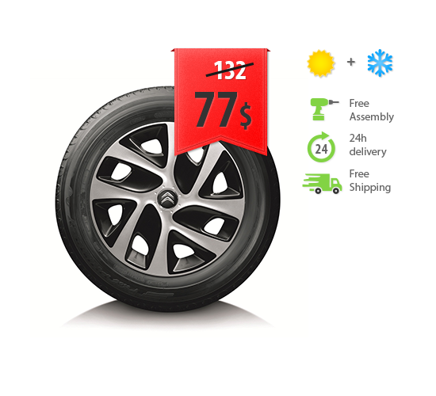
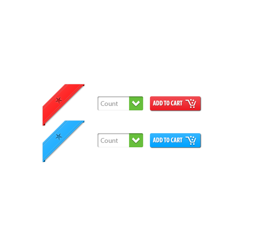
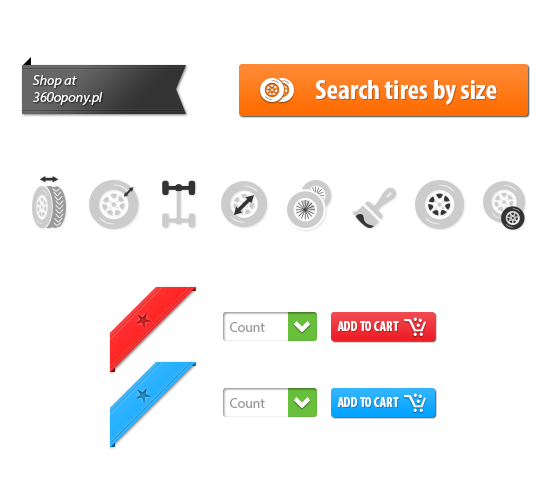

<script>
	if (typeof jQuery == 'undefined') {  
		window.location = 'index.html?forward=work-opony360.html';
	}
</script>
<section id="work">
	<div id="work_content_details" class="container">
		
		
		<p>360 opony is an innovative, modern tire web store</p>
		
		<hr>
		
		<p>
			<div class="floaty-left">
				<br /><br />
				We had a great time working on another exciting project called <span class="software">360 opony</span>.<br /><br />
				Usability is key to a successful site so we created layout that is clear and logical - making it easy to navigate. User-friendly, sales-driven content arrangement and creative to optimize efficiency and maximize sales. 
			</div>
			<div class="floaty-right"></div>
			<div class="clearfix"></div>				
		</p>
		
		
		<hr>
		
		<p class="quotation">"Web applications should provide truly transformative solutions. We listen carefully - and we don't start our work until we all share a complete picture of your company's needs."</p>
		<p class="software">Michał Augustynek, Analysis Manager at Tribity</p>
		
		<hr>
		
		<p>
			<div class="floaty-left"></div>
			<div class="floaty-right">
				<span class="software">We love simple icons.</span> Particularly, tire web store requires a nice set of icons to present a wide range of product features.<br /><br />
				</div>	
			<div class="clearfix"></div>		
		</p>

		<hr>
		
		<p>
			Next, read about <a href="work-racinglife.html">Racing Life</a>
		</p>
		
		<hr>
	</div>
</section>